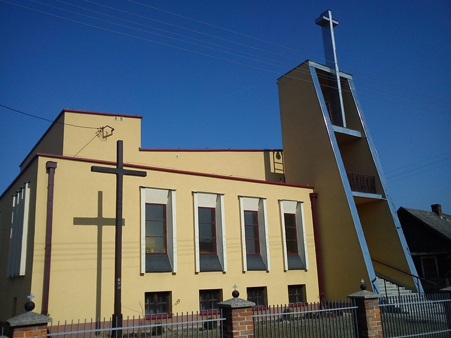
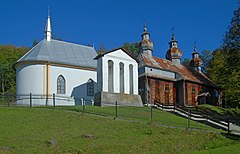

|
Pysznica
Wycieczkę rowerową zaczynamy w Pysznicy. Jest to piękna miejscowość ze wspaniałą historią (gmina wiejska w województwie podkarpackim, w powiecie stalowowolskim)

Rzeczyca Długa
Wieś Rzeczyca Długa to wieś leżąca w gminie Radomyśl nad Sanem. Należy do województwa podkarpackiego, powiatu stalowowolskiego. Jest to miejscowość z pięknymi widokami, idealna dla rowerzystów.

Lipa
Naszym następnym celem jest miejscowość-Lipa.To wieś położona w województwie podkarpackim, w powiecie stalowowolskim. To tutaj można odpocząć, napić się czy zjeść, a nawet ochłodzić się pysznymi lodami z budki.

|